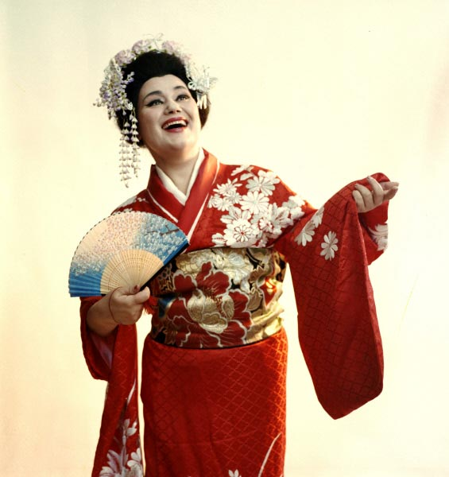

PERSONALITATI MARCANTE din Moldova
Intreaga noastră istorie se rezumă la oamenii de succes care au facut ceva deosebit pentru tara noastra, care au luptat, care ne-au dus faima peste hotare si care au demonstrat adevarata ei frumusete. Va propunem sa descoperim realizarile personalitatilor marcante din tara, nascute sau legate oarecum de meleagurile Moldovei.
.
Istoria Republicii Moldova este foarte bogata in persoane marcante care au si-au scris numele in istorie atât tarii noastre cât si a altor tarii printre ei sunt: domnitori care aparau tara cu curaj si cu pieptul inaite fara frica de moarte, scriitori revolutionari care isi exprimau durerea sufleteasca care era legata de situatia din tara necatând la faptul ca puteau fi pedepsiti aspru, cântaretii care au dat de inteles lumii intregi cine sunt moldovenii si ce oameni talentati, mestesugari cu care nu se puteau compara nimeni.
